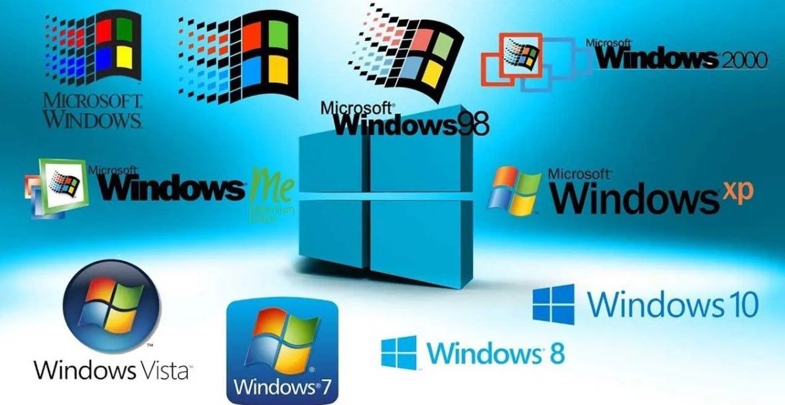

Microsoft Corporation fue fundada por Paul Allen y Bill Gates el 4 de abril de 1975 para desarrollar y comercializar intérpretes de BASIC para el Altair 8800, un microordenador diseñado en 1974 y basado en el procesador Intel 8080. A mediados de 1980 llegó a dominar el mercado de los sistemas operativos para computadores personales con MS-DOS. El 20 de noviembre de 1985, Microsoft lanzó la primera versión para minoristas de su sistema operativo Microsoft Windows. Originalmente, Windows no era más que una extensión gráfica para MS-DOS. A partir de entonces, Microsoft Windows fue creciendo continua y exponencialmente adaptándose a todos los avances que se iban presentando en el ámbito de la informática y los ordenadores personales. Algunas de sus versiones más importantes se detallan a continuación:
| Versión | Año | Principales características |
|---|---|---|
| Windows 3.0 | 1990 | Microsoft Office |
| Windows 95 | 1995 | Menú Inicio, multitasking e Internet Explorer |
| Windows 98 | 1998 | Mejora de características de Internet |
| Windows XP | 2001 | Nueva IU |
| Windows Vista | 2007 | Versiones especializadas, Office 2007 |
| Windows 7 | 2009 | Accesibilidad y estabilidad |
| Windows 8 | 2012 | ELiminación del menú Inicio |
| Windows 10 | 2015 | Cortana, Microsoft Edge |